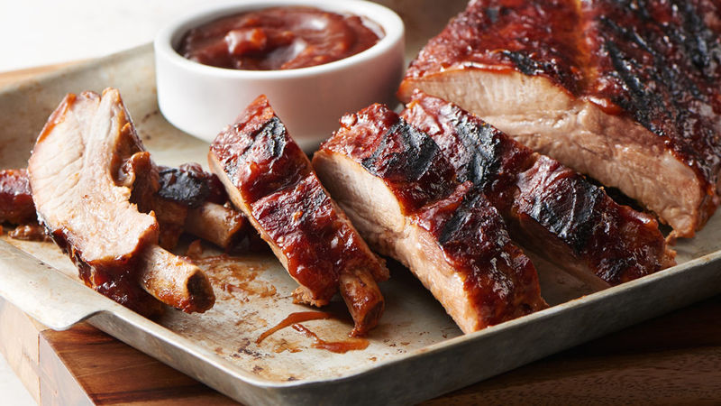
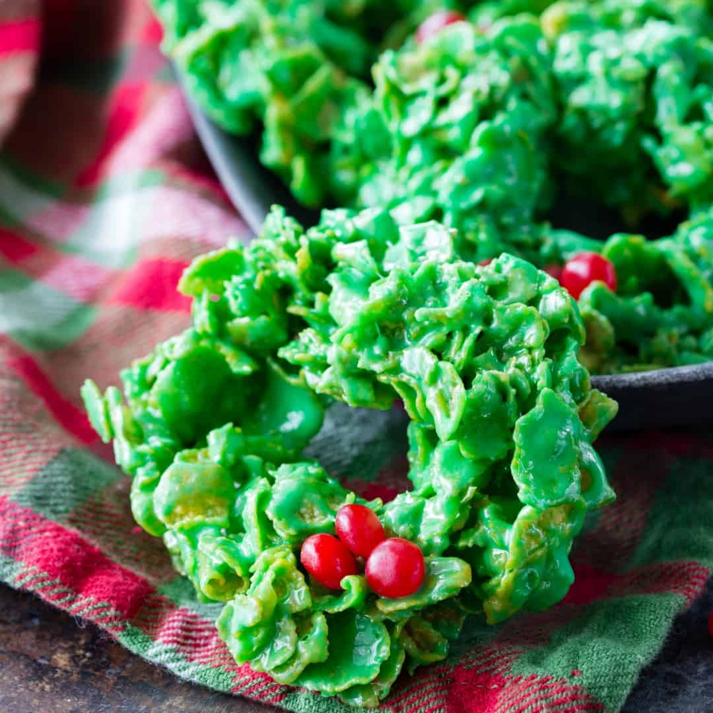
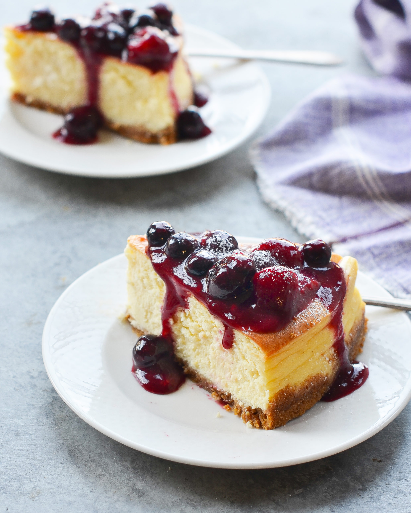
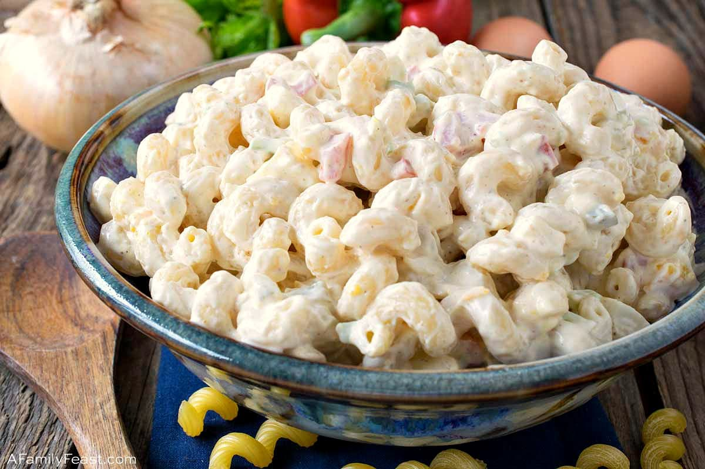
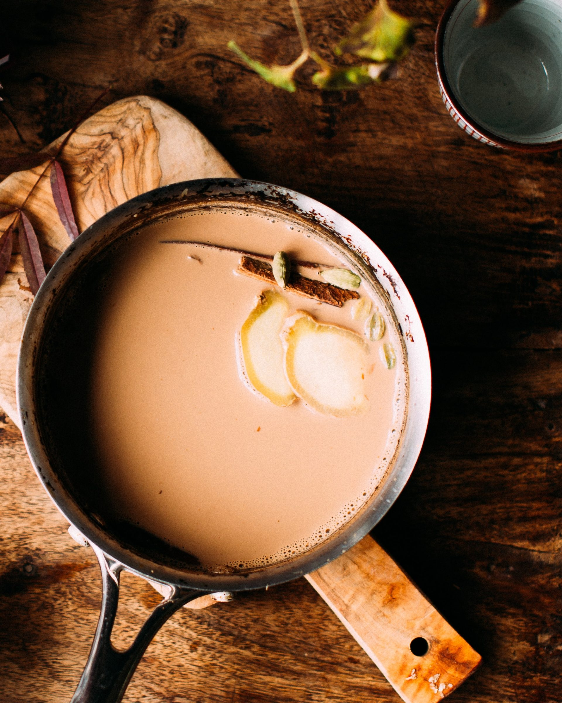
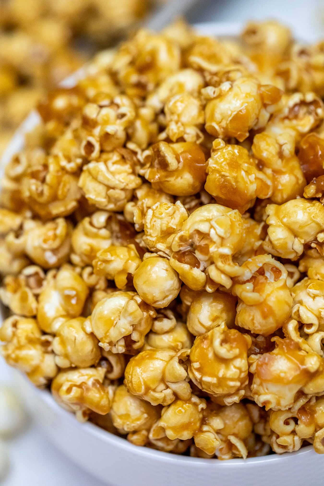

Country-style ribs are cut from the loin, one of the leanest areas of pork. These ribs are seasoned, boiled until tender, then baked with your favorite barbeque sauce. That's it! Back to simplicity, back to the country life. Sigh.
Dinner
2 ½ pounds country style pork ribs, 1 tablespoon garlic powder, 1 teaspoon ground black pepper, 2 tablespoons salt, 1 cup barbeque sauce
1.) Place ribs in a large pot with enough water to cover. Season with garlic powder, black pepper and salt. Bring water to a boil, and cook ribs until tender.
2.) Preheat oven to 325 degrees F (165 degrees C).
3.) Remove ribs from pot, and place them in a 9x13 inch baking dish. Pour barbeque sauce over ribs. Cover dish with aluminum foil, and bake in the preheated oven for 1 to 1 1/2 hours, or until internal temperature of pork has reached 160 degrees F (70 degrees C).
These Christmas wreaths are made using corn flakes and cinnamon candies. They're fun to make and eat. If the mixture is cooling too quickly, set the pan in a skillet with one inch of very hot water to keep the dough manageable.
Dessert
½ cup butter, 30 large marshmallows, 1 ½ teaspoons green food coloring, 1 teaspoon vanilla extract, 4 cups cornflakes cereal, 2 tablespoons cinnamon red hot candies
1.) Melt butter in a large saucepan over low heat. Add marshmallows, and cook until melted, stirring constantly. Remove from heat, and stir in the food coloring, vanilla, and cornflakes.
2.) Quickly drop heaping tablespoonfuls of the mixture onto waxed paper, and form into a wreath shape with lightly greased fingers. Immediately decorate with red hot candies. Allow to cool to room temperature before removing from waxed paper, and storing in an airtight container.
A simple cream cheese pie baked in a graham cracker crust and topped with succulent strawberries and blueberries.
Dessert
1 (9 inch) graham cracker crust, 1 (8 ounce) package cream cheese,1 cup white sugar, ½ cup confectioners' sugar, 1 cup sour cream, ¼ cup milk, 2 teaspoons vanilla extract, 3 eggs, 1 cup sour cream, ¼ cup confectioners' sugar, 1 teaspoon vanilla extract, 1 ½ cups fresh strawberries, halved, 1 cup fresh blueberries, 1 cup strawberry glaze
1.) Preheat oven to 350 degrees F (175 degrees C.)
2.) In a large bowl, beat the cream cheese, white sugar and 1/2 cup confectioners sugar until smooth. Beat in 1 cup sour cream, milk and 1 teaspoon vanilla. Slowly beat in eggs, one at a time. Pour filling into crust.
3.) Bake in the preheated oven for 25 minutes, or until filling is set. Cool for 20 minutes. Preheat oven to 425 degrees F (220 degrees C.)
4.) In a small bowl, combine 1 cup sour cream, 1/4 cup confectioners' sugar and 1 teaspoon vanilla. Mix until smooth, then spread over cheesecake. Bake in preheated oven for 5 minutes. Allow to cool, then refrigerate for at least 1 hour.
5.) Arrange strawberries and blueberries on top of the cheesecake. Spoon strawberry glaze over berries. Refrigerate several hours before serving.
Slightly sweet, classic macaroni salad recipe!
Lunch
3 cups elbow macaroni, 1 ½ cups mayonnaise, ⅓ large onion, minced, ¼ cup chopped fresh parsley, 2 tablespoons prepared yellow mustard, 2 teaspoons rice vinegar, 1 teaspoon white sugar, or more to taste, ¾ teaspoon celery seed, ½ teaspoon salt, 3 hard-cooked eggs, chopped
1.) Bring a large pot of lightly salted water to a boil. Cook elbow macaroni in the boiling water, stirring occasionally, until cooked through but firm to the bite, 8 minutes; drain.
2.) Rinse macaroni in cold water until cool; drain.
3.) Stir mayonnaise, onion, parsley, mustard, rice vinegar, sugar, celery seed, and salt together in a bowl; add macaroni and eggs and stir to coat.
4.) Chill in refrigerate for 30 minutes before serving.
Kinza's authentic Pakistani Chai is rich and milky, deeply coloured, steaming hot, and boldly flavourful.
Beverage
8 oz water, 4 oz whole milk, granulated sugar to taste (about 2 heaped teaspoons per serving, traditionally), 1 heaping tablespoon of black tea empty out tea bags to make a tablespoon if you don't buy loose leaves. Optional: 4 cardamom pods smashed with side of a knife, small piece of cinnamon stick, 1/4 " coin of fresh ginger, pinch of fennel seeds about 10 seeds
1.) Bring water to a boil in a medium saucepan. Reduce the heat to a low-medium. Add the black tea and let it simmer for 2-3 minutes.
2.) Add in the milk and desired spices. Steep until tea takes on a deep, pinky-tan colour, about 3 minutes, stirring occasionally. The tea will soon boil over, be ready to decrease the heat. Strain into a cup and stir in sugar to taste.
Great caramel popcorn for any holiday or occasion. If you like chewy popcorn, bake less.
Snack
1 cup butter, 2 cups brown sugar, ½ cup corn syrup, 1 teaspoon salt, ½ teaspoon baking soda, 1 teaspoon vanilla extract, 5 quarts popped popcorn
1.) Preheat oven to 250 degrees F (95 degrees C). Place popcorn in a very large bowl.
2.) In a medium saucepan over medium heat, melt butter. Stir in brown sugar, corn syrup and salt. Bring to a boil, stirring constantly. Boil without stirring 4 minutes. Remove from heat and stir in soda and vanilla. Pour in a thin stream over popcorn, stirring to coat.
3.) Place in two large shallow baking dishes and bake in preheated oven, stirring every 15 minutes, for 1 hour. Remove from oven and let cool completely before breaking into pieces.